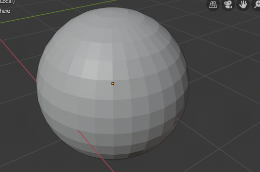

上下文视图¶
3D视图有几个 "上下文视图" 模式，用于设置为特定的3D视图。这些视图会改变3D视图的整体外观或者与物体的交互方式。
全局/局部 视图¶
参考
| 模式: | 所有模式 |
|---|---|
| 菜单: | |
| 快捷键: | NumpadSlash |
Global view shows all of the 3D objects in the scene. Local view isolates the selected object or objects, so that they are the only ones visible in the viewport. This is useful for working on objects that are obscured by other ones, or to speed up the viewport performance in heavy scenes.
您可以在 全局视图 和 局部视图 之间切换，从 视图菜单 中选择该选项或者使用快捷键 NumpadSlash.

全局视图。 |

局部视图。 |
{kind=link}
Note
这些注释涵盖了局部视图的中一些不明显的区别。
- 3D 游标
- 在局部视图中，3D游标不会被锁定在场景中。相反，每个视图都有一个独立的游标位置。
- 层
局部视图绕过层, 在进入局部视图时只使用所选的物体. 虽然在本地视图中可以添加新物体。
也可以将物体从局部视图中发送出去，, 使用 , 这对于进一步独立显示所选对象是很有用的。
- Rendered Shading
- While using rendered shading mode lights outside the local view are still used, this allows you to quickly render previews without having to remember to select all lights when entering local view.
Tip
如果你是新手,不小心按下 NumpadSlash 就会发生。 如果你的场景中有一堆东西神秘地消失了。那就试试关闭局部视图模式。
Remove from Local View¶
参考
| 模式: | 所有模式 |
|---|---|
| 菜单: | |
| 快捷键: | M |
Objects can be removed from Local View by selecting them and using the Remove from Local View operator. This will move the selected object back to global view and all other objects will remain in local view. If the last remaining object is removed, the local view will be left empty and you will have to exit local view to see any objects.
四格视图¶
参考
| 模式: | 所有模式 |
|---|---|
| 菜单: | |
| 面板: | |
| 快捷键: | Ctrl-Alt-Q |
切换四格视图将把3D视图分成4个视图: 3个 正交 "侧视图" 和一个 摄像机/用户视图. 这个视图将允许您从多个视图点立即看到您的模型. 在这种安排中, 您可以独立缩放和平移每个视图，但是不能旋转视图。
所有视图的快捷键：
- 显示场景中所有物体 Ctrl-Home
- 将选择对象移动到视图中心 Ctrl-NumpadPeriod
Note
Quad View is different from splitting the area and aligning the view manually. In Quad View, the four views are still part of a single 3D View. So they share the same display options and layers.
四格视图。
选项¶
These options can be found in .
- 锁定
- 如果您希望能够旋转每一个视图，您可以取消勾选 锁定 选项。
- 方框
- 同步侧视图之间的视图位置。
- 范围
- 基于其他侧视图的可见区域来裁剪物体的显示结果。